Motion on an inclined plane
Consideriamo un corpo, assimilabile a un punto materiale di massa m, che possa muoversi sotto l’azione della forza peso e di eventuali altre forze, compresa la forza di attrito radente, su una superficie piana inclinata di un angolo θ rispetto a un piano orizzontale, Figura 2.20a, detta piano inclinato.
Se agisce solo la forza peso P, in assenza percio di attrito tra corpo e piano inchinato, si ha secondo la legge di Newton
P + R = ma
dove R è la reazione vincolare del piano di appoggio che ha un'unica componente normale al piano stesso, vincolo liscio. Scomponendo lungo le direzioni ortogonale e parallela al piano inclinato si ottiene, Figura 2.20b.
-mg cos θ + N' = 0, mg senθ = ma
dato che il corpo è vincolato a muoversi lungo il piano inclinato. Dalla prima condizione si calcola il valore della reazione vincolare, N = mg cosθ, dalla seconda il valore dell’accelerazione, a = g sen θ < g il corpo scende con moto uniformemente accelerato e l'accelerazione è minore di quella di gravità. Al limite, se l'angolo θ fosse π/2, il piano inclinato diventerebbe una parete verticale liscia e pertanto la massa scenderebbe con accelerazione a = g dato che sen (π/2) = 1.
Se esiste un attrito radente, tra il piano inclinato e il corpo, il moto lungo il piano non può avvenire se la componennte della forza peso lunto il piano inclinato non supera la massa forza di attrito statico:
mg senθ ≤ Fas,max = μsN = μs mg cos θ
essendo N la componente normale della reazione vincolare del piano, uguale a mg cos θ come nel caso precedente. Pertanto la condizione per l'equilibrio statico di un corpo poggiato su un piano inclinato scabro è
tg θ ≤ μs
Per avere moto occorre aumentare l'angolo θ di inclinazione in modo da non soddifare la condizione suddetta. In queste condizioni, scomponendo l'equazione di Newtonw lungo le direzioni ortogonale e parallela al piano inclinato si ottiene:
-mg cos θ + N = 0
mg senθ - μdN = ma
combinando le due equazioni, si ottiene che il corpo scende lungo il piano inclinato con accelerazione:
a = (senθ - μd cos θ)g
Nel caso il corpo parta da fermo, dovendo essere il termine tra parentesi positivo, si ha per il coefficiente di attrito dinamico μd < tg θ; in particolare, se μd = tg θ allora a = 0: il moto è uniforme e si tratta di un es. di equilibrio dinamico.
Riassumendo, se il corpo è fermo sul piano inclinato esso resta fermo per tutti gli angoli di inclinazione compresi tra zero e θs tale che tg θs = μs; per θ > θs il corpo non può restare fermo e scende lungo il piano inclinato. Però, una volta che il corpo si è messo in movimento, poiché la forza di attrito in queste condizioni è minore di quella in quiete (μd < μs), si può avere moto anche per angoli minori di θs precisamente compresi tra θs e θd tale che tg θd < μd.
Se invece il corpo all'istante iniziale sta scendendo lungo il piano con velocità v0, esso decelera se mg sen θ < μdmg cos θ, cioè se tg θ < μd, si muove di moto uniformemente accelerato se tg θ > μd e prosegue con velocità v0 se tg θ = μd. L'unica differenza rispetto alla partenza da fermo è che si può avere moto (uniformemente decelerato) anche se tg θ < μd proprio perché c'è una velocità iniziale (v. es. 2.10).
La misura degli angoli θs, acui un corpo comincia a scivolare, e θd, per cui il moto è uniforme, è utile per determinare i coefficienti μs e μd.
Storicamente, gli esperimenti sul piano inclinato si sono rivelati utili per lo studio del moto uniformemente accelerato. La possibilità di sperimentare con accelerazioni inferiori a g e regolabili a piacere tramite θ, ha consentito di allungare la durata del moto e quindi di studiarne le caratteristiche in modo significativo pur disponendo di strumentazione imprecisa.
There are situations in which the magnitude of the normal force is NOT equal to the weight of the block. Consider the figure below
Showing the the angles are equal
△OCD is a right triangle, as is △OCE. Because
∠OCD = 90° = ∠OCE + ∠DCE = ∠OCE + α
and
∠OCE + ∠COE + 90 = ∠OCE + θ + 90=180°
we have that
∠OCE + θ=90 and ∠OCE + α = 90
so we must have θ = α. ■